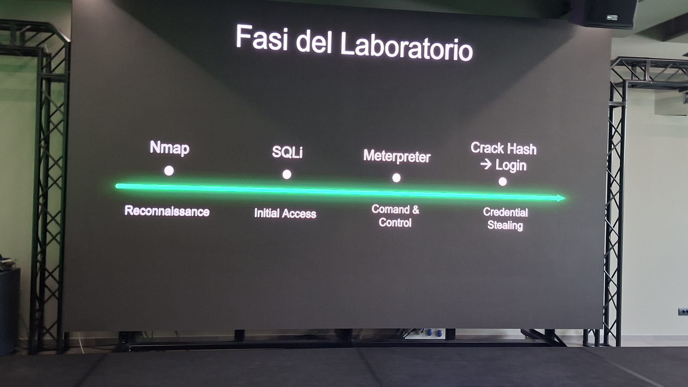

Cos'è
Mead Informatica è un'azienda italiana fondata nel 1994 con sede principale a Reggio Emilia e filiali a Casier (TV), Agrate Brianza (MB) e Roma. Con oltre 150 dipendenti, di cui il 70% con profilo tecnico, Mead si propone come un System Integrator nel settore ICT, offrendo soluzioni integrate e servizi tecnologici per aziende pubbliche e private.
Mead si distingue per una vasta gamma di servizi, tra cui:
- Cybersecurity
- Networking
- Data Center
- Unified Communication
- Sviluppo software
- Governance, Risk & Compliance
- Supporto tecnico
Introduzione
Nella prima parte dell'incontro ho ricevuto un'introduzione generale alla cybersecurity: cos'è, in cosa consiste e quali figure professionali operano in questo settore. Mi è stato poi spiegato come si struttura un attacco informatico nelle sue fasi principali:
- Reconnaissance: raccolta di informazioni sul bersaglio
- Weaponization: creazione dello strumento di attacco (es. malware)
- Delivery: invio dell’attacco (email, link, ecc.)
- Exploitation: sfruttamento di una vulnerabilità
- Installation: installazione del malware nel sistema
- Command and Control: comunicazione con il sistema compromesso
- Actions on Objectives: esecuzione degli obiettivi (es. furto dati)
Successivamente mi è stata fornita una panoramica sulle diverse categorie di hacker:
- White hat: hacker etici che lavorano legalmente per migliorare la sicurezza: effettuano test di penetrazione (penetration testing), trovano vulnerabilità e le segnalano alle aziende per correggerle
- accedere a sistemi senza autorizzazione per individuare falle, ma senza l’intento di causare danni. Tuttavia, il loro comportamento resta illegale o eticamente discutibile, anche se a volte segnalano i problemi scoperti
- Black hat: hacker malintenzionati e illegali: sfruttano vulnerabilità per guadagno personale o per danneggiare sistemi e organizzazioni
Laboratorio
Nella seconda parte ci siamo divisi in due gruppi con ruoli contrapposti. Il red team aveva il compito di attaccare un sistema, il blue team di difenderlo.

Dal lato offensivo, il primo passo è stato utilizzare nmap per scansionare la rete alla ricerca di porte aperte e servizi esposti. Una volta individuato l'obiettivo, è stata eseguita una SQL injection su una pagina di login vulnerabile, ottenendo così l'accesso al sistema. Da lì è stato avviato un processo PowerShell sul dispositivo compromesso per mantenere il controllo usando Meterpreter. Infine sono state rubate le credenziali di login della vittima per poter entrare nel sistema in futuro con facilità.
Dal lato difensivo, attraverso un software di monitoraggio dei log di rete è stato rilevato l'avvio anomalo del processo PowerShell. Tramite SentinelOne l'esecuzione è stata immediatamente bloccata, neutralizzando l'attacco prima che potesse causare danni.
Commento
Competenze attivate
Trasversali
- Competenza personale, sociale, e capacità di imparare ad imparare
- Competenza imprenditoriale
- Competenza matematica e in scienze, tecnologia e ingegneria
- Competenza digitale
- Competenza in materia di cittadinanza
Specifiche
- Comprensione delle fasi di un attacco informatico
- Capacità di analisi delle vulnerabilità di un sistema
- Utilizzo base di strumenti di rete
- Conoscenza base delle tecniche di attacco
- Capacità di rilevamento e risposta agli attacchi informatici
- Comprensione dei ruoli Red Team / Blue Team
- Consapevolezza delle pratiche di sicurezza e difesa dei sistemi
L'attività è stata abbastanza interessante, soprattutto perché rispetto all'incontro dell'anno precedente le mie conoscenze in materia erano cresciute notevolmente. Era un piacere riuscire a seguire ogni concetto con chiarezza e collegarlo a ciò che avevo già studiato. Il mondo della cybersecurity è vastissimo e quello che mi è stato mostrato ne rappresenta solo una piccola parte, ma è comunque riuscito a suscitarmi parecchio interesse.
La nota negativa riguarda la modalità con cui l'incontro è stato condotto. Mi aspettavo un laboratorio in cui ogni gruppo potesse provare in prima persona a eseguire e respingere gli attacchi. Invece eravamo in gruppi numerosi davanti a un unico monitor, con un tecnico Mead che eseguiva tutte le azioni al posto nostro. Era difficile sia seguire visivamente quello che stava facendo, sia mantenere l'attenzione in un formato così poco interattivo. La vicinanza tra i gruppi rendeva inoltre difficile isolarsi e concentrarsi, con le voci degli altri che si sovrapponevano continuamente.
Nel complesso, un argomento davvero stimolante che avrei voluto esplorare in modo più pratico. Avere almeno la possibilità di seguire le azioni dal proiettore, visibili a tutti contemporaneamente, avrebbe reso l'esperienza decisamente più significativa.